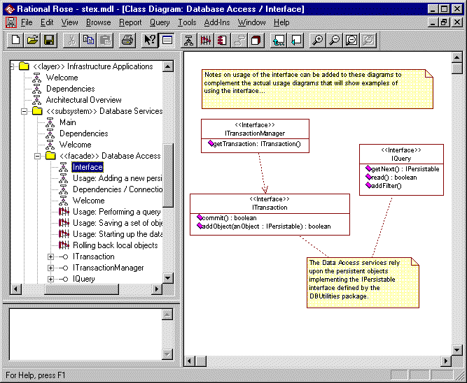
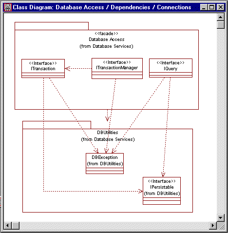

Standards: <<facade>> Package
TopicsIntroduction
|
| Diagram | Purpose | Use | Comment |
| Main / Interface *1 | A class diagram showing the full interface presented by the facade. | Mandatory | A diagram showing the full interface of the
subsystem as presented by the facade. This must include all classes that are part of
the interface (including those passed as parameters to methods that are part of the
interface). Note: You should never attempt to combine this diagram with any other diagrams. |
| Usage | A set of interaction (sequence) and / or class
diagrams showing how the clients of the subsystem should use the facade. Naming convention: Usage: diagram name |
Mandatory | These diagrams show how a client would use the
subsystem. It should not describe any internal behavior. Typical
examples include: The sequence diagram should state [Preconditions] and [postconditions] at the start and end of the trace. |
| Dependencies | A class diagram showing which other packages the subsystem facade is dependent on. | Mandatory* | *Not required if the facade is not dependent
on any other packages. This would include dependencies to all of the packages from which the individual interfaces are imported or which supply model elements that the subsystems interface is dependent upon. |
| Connections | A class diagram showing which other interfaces and classes the components of the facade are dependent on. | Mandatory* | *Not required if the facade is not dependent
on any other packages. This would include dependencies to all of the interface and utility classes upon which the facade is dependent. This is the only internal design documentation required for a facade. This diagram can often be combined with the Dependencies diagram to show both the package level dependencies and the class level connections (i.e. Diagram named Dependencies / Connections) |
| Welcome | A class diagram presenting the purpose of the facade. | Optional | An explanatory diagram welcoming users to the facade. |
Notes:
*1 - The Main/Interface diagram is sometimes referred to as the Interface Realizations diagram (See the RUP: Rose Tool Mentors).
Constraints 
Constraints: <<facade>> packages can contain only interfaces (i.e. interface classes). All classes in the facade are considered public.
Notes: <<implementation>> packages will implement the interfaces defined by the <<facade>> packages (See RUP Guidelines: Design Subsystem and Standards: Implementation Packages).
Examples
An example <<facade>> package is shown below, with its Interface diagram displayed. The browser shows the presence of a set of Usage diagrams explaining how the services offered by the facade's interface should be used.

The Dependencies / Connections diagram shows how the facade depends upon the underlying Data Base Utilities package:
